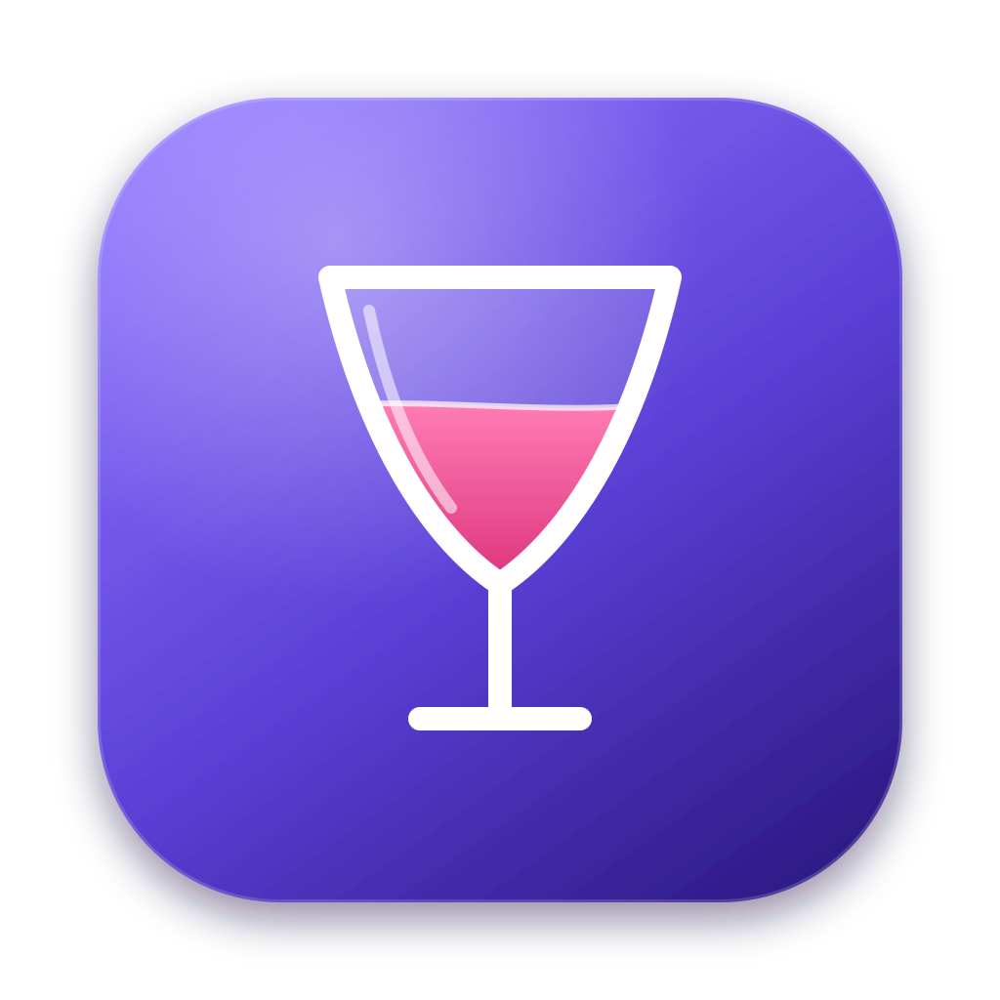

One download
On first launch Vino installs Apple's Rosetta and downloads vino-wine, its own build of CodeWeavers' open-source CrossOver Wine.

VinoVino is a free, open-source Mac app that runs Windows apps. It's built on Wine, and it's a free alternative to CrossOver.
What you get
On first launch Vino installs Apple's Rosetta and downloads vino-wine, its own build of CodeWeavers' open-source CrossOver Wine.
One-click installs for Notepad++, 7-Zip, WinMerge and Greenshot. Each download is checked against the publisher's checksum.
Separate Windows setups with clear switches: DirectX via DXVK, Retina, ⌘ as Ctrl, MSync, AVX support, Windows version, run in a window.
Add Visual C++, .NET, DirectX extras and fonts through the bundled Winetricks.
Error lines show up right on the app's page, next to the logs. Developers get Metal HUD and Xcode GPU capture.
Make a shortcut for the Dock, Launchpad and Spotlight, open .exe files from Finder, and set per-app launch arguments, language and environment. Controllers and Task Manager panels are built in.
Prefer the terminal? Everything is also available from the full vino command line.
How it works
Grab it from GitHub and open it.
The first launch installs Rosetta and downloads vino-wine: Wine 11.0 with CodeWeavers' fixes and MSync for smoother games.
Drag a Windows installer onto the window. The app shows up with its real icon, read from the .exe. Click to open.
Honest limits: games whose anti-cheat needs the Windows kernel can't run, and DirectX 12 isn't supported.
Support Wine
Everything Vino does sits on top of the Wine project. If Vino is useful to you, support the people who make it. Donations go to the Wine Development Fund, managed by Software Freedom Conservancy.
Support CodeWeavers
CodeWeavers employs Wine's lead maintainer and many of its developers, and their work flows straight back into Wine. vino-wine is built from their open-source code. If you can, buy CrossOver: it's the best way to keep them doing it.
Thanks
Vino and vino-wine are not affiliated with or endorsed by CodeWeavers. CrossOver and CodeWeavers are trademarks of CodeWeavers, Inc.